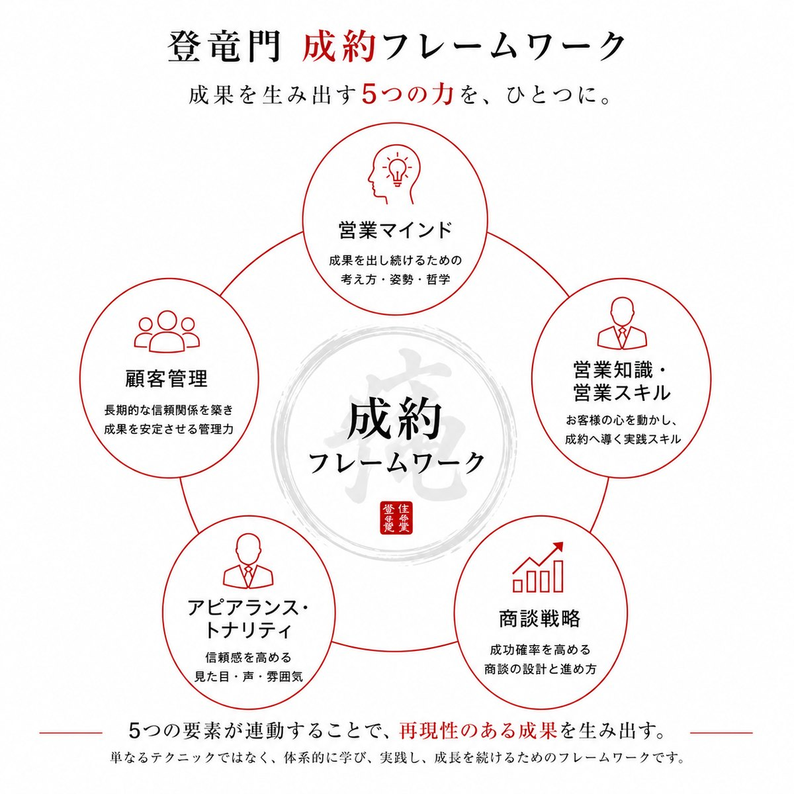

住宅営業の成約フレームワークとは：成果を生み出す5つの力
住宅営業の成果を決める5つの要素（営業マインド、営業知識・営業スキル、商談戦略、アピアランス・トナリティ、顧客管理）を、現場でよく見られる状況と受講者の事例とともに解説します。
対象 住宅営業全般 読了 10分 公開 2026.10.21
住宅営業の成果は、5つの要素の掛け算で決まります。成果が出ない営業担当者は、すべてが不足しているわけではありません。多くの場合、5つのうち1〜2つが欠けているだけです。
本稿では、5つの要素それぞれが扱う課題を、現場で実際によく見られる状況とあわせて整理します。当コラムの記事は、すべてこの5つに沿って分類しています。

5つの要素は「足し算」ではなく「掛け算」
成約フレームワークを構成する要素は、次の5つです。
- 営業マインド
- 営業知識・営業スキル
- 商談戦略
- アピアランス・トナリティ
- 顧客管理
足し算であれば、一つが弱くても他で補えます。しかし掛け算では、一つが小さければ、他が大きくても結果は小さくなります。商品知識が豊富でも、初対面で警戒されれば話は届きません。商談の設計が優れていても、顧客管理がなければ、毎月の成果は安定しません。
また、5つの要素は互いに影響し合っています。たとえば、営業マインドの弱さは、商談戦略の失敗に直結します。「価格のせい」「会社のせい」と捉える習慣がつくと、商談の設計そのものを見直さなくなるためです。
1. 営業マインド（MINDSET）
営業マインドが扱うのは、成果を出し続けるための考え方と姿勢です。現場では、次のような悩みとして現れます。
- 断られることへの恐怖
- 契約後のクレームへの不安
- 売り込みと思われることへの抵抗感
- 自社商品への確信のなさ
典型的なのが、商談の最後の場面です。「今日は雰囲気が違う」「まだ早いかもしれない」と判断して、クロージングを見送った経験はないでしょうか。配慮のように見えて、実際には恐れが別の言葉に置き換わっているだけというケースが少なくありません。
この状態は、アクセルとブレーキを同時に踏んでいるのと同じです。最後の一歩を、自分自身が踏めていないのです。
2. 営業知識・営業スキル（KNOWLEDGE & SKILL）
営業知識・営業スキルが扱うのは、お客様の心を動かし、成約へ導く実践的な技術です。現場では、次のような悩みとして現れます。
- 説明ばかりになってしまう
- 質問や雑談が苦手である
相手に関心のない説明は、聞き流されます。また、ヒアリングが事実確認にとどまり、「なぜ家を建てたいのか」という動機に届いていなければ、提案は響きません。
ここで重要なのは、知識の量が成果を決めるわけではないという点です。知識が多くなくても、伝える力と質問する力があれば、成果を出している営業担当者は実際にいます。
3. 商談戦略（STRATEGY）
商談戦略が扱うのは、成功確率を高める商談の設計と進め方です。現場では、次のような悩みとして現れます。
- 「他社の方が安い」と言われて断られる
- 土地なしのお客様の契約が、年3棟以下にとどまる
これらの原因は、価格そのものではありません。価値を積み上げる設計がないことにあります。いつ、何を、どの順番で伝えるかが決まっていないため、他社との比較という土俵に乗せられ、価格勝負になるのです。
土地なしのお客様は、来場者の約7割以上を占めるとされます。この層を受注に結びつけるには、予算の管理、土地の案内方法、「今が買い時である」ことを伝える提案の設計が欠かせません。戦略で負けた場面は、戦術では取り返せません。
4. アピアランス・トナリティ（APPEARANCE & TONALITY）
アピアランス・トナリティが扱うのは、見た目、声、言葉遣いによる信頼感です。お客様は、最初の数分で判断を下します。見た目、声の自信、言葉遣いによって、候補から外されることもあります。そして、一度外されると、その後の話の内容は届きません。
しかも、外されたこと自体に、本人は気づきにくいのが特徴です。立場によって、次のような傾向があります。
- 若手：学生のような印象から、「大きな買い物を任せられるか」と疑われやすい
- ベテラン：慣れから身だしなみが緩みやすい（眉、ネクタイ、体に合わないスーツ、タバコの匂いなど）
トップセールスとの差が最も明確に表れるのが、この要素です。
5. 顧客管理（CUSTOMER MANAGEMENT）
顧客管理が扱うのは、長期的な信頼関係を築き、成果を安定させる管理力です。現場では、次のような状態として現れます。
- 月末に案件を無理にまとめ、月初には案件がほとんどない
- 初回のお客様を、月末に強引にクロージングしてしまう
この状態は、毎月ゼロから勝負していることを意味します。集客がない月は、0棟になりかねません。集客が減少傾向にある現在、これは運任せの受注と変わりません。
安定した成果には、仕組み化が必要です。再来客の管理、中長期の顧客管理、紹介を生み出す仕組みが、その中心になります。
成約フレームワーク セルフチェック
ご自身の現状を、5つの要素ごとに点検してください。各項目の ○（できている）、△（ときどきできている）、×（できていない）をクリックすると、色が付きます。
| チェック項目 | ○ | △ | × |
|---|---|---|---|
| 1. 営業マインド | |||
| 断られることを恐れず、最後のクロージングまで進められている | ○ | △ | × |
| 契約後のクレームを恐れて、提案を控えていない | ○ | △ | × |
| 「売り込みと思われたくない」という理由で、踏み込みを避けていない | ○ | △ | × |
| 自社商品に、確信を持って提案できている | ○ | △ | × |
| 2. 営業知識・営業スキル | |||
| 説明ばかりにならず、お客様の話を聞く時間を取れている | ○ | △ | × |
| 質問や雑談で、会話を広げられている | ○ | △ | × |
| 「なぜ家を建てたいのか」という動機まで聞けている | ○ | △ | × |
| 3. 商談戦略 | |||
| 「他社の方が安い」と言われても、価値で比較してもらえている | ○ | △ | × |
| いつ、何を、どの順番で伝えるかを決めて商談している | ○ | △ | × |
| 土地なしのお客様に、予算管理・土地の案内・買い時の提案ができている | ○ | △ | × |
| 4. アピアランス・トナリティ | |||
| 最初の数分で信頼を得られる見た目・声・言葉遣いになっている | ○ | △ | × |
| 身だしなみ（眉、ネクタイ、スーツのサイズ、タバコの匂いなど）を定期的に点検している | ○ | △ | × |
| 5. 顧客管理 | |||
| 月初にも、商談中の案件を十分に抱えている | ○ | △ | × |
| 初回のお客様に、月末だからと強引なクロージングをしていない | ○ | △ | × |
| 再来客と中長期のお客様を、仕組みで管理できている | ○ | △ | × |
| 紹介を生み出す仕組みがある | ○ | △ | × |
※ クリックした内容は保存されません。印刷、またはスクリーンショットでお控えください。
×や△が集中している要素が、現在の成果を最も押し下げている要素です。まず、その要素の改善から着手してください。
どこから改善するか
5つの要素を一度に改善する必要はありません。まず、自分にとって最も弱い要素から着手してください。
- 断られることが怖い → 営業マインド
- 説明が長くなる、ヒアリングが浅い → 営業知識・営業スキル
- 価格で比較されてしまう → 商談戦略
- 初対面で警戒される → アピアランス・トナリティ
- 月初に案件がない → 顧客管理
まとめ
成約フレームワークは、成果を生み出す5つの力をひとつにまとめたものです。単なるテクニックではなく、体系的に学び、実践し、成長を続けるための枠組みです。
この5つを、動画講座「住宅営業登竜門」では、16プログラム・100本以上の動画で体系的に学べます。
よくある質問
Q5つのうち、どれから改善すればよいですか？
自分にとって最も弱い要素からです。上の一覧で、最も当てはまるものを選んでください。5つを同時に改善する必要はありません。
Qなぜ「掛け算」なのですか？
どれか一つでも欠けると、全体の成果が下がるためです。また、営業マインドの逃げ道が商談戦略の失敗につながるように、5つの要素は互いに影響し合っています。
Q知識が少なくても、成果は出せますか？
出せます。知識の量よりも、お客様に伝える力と、質問する力が重要です。
受講者の事例
動画講座「住宅営業登竜門」の受講者からは、次のような声が寄せられています。
| 立場 | 成果 |
|---|---|
| 入社3年目・男性 | 年3棟から年18棟へ |
| 法人導入・営業部門 | 土地なし契約率が8割まで上昇 |
| 入社5年目・男性 | 12ヶ月連続受注、年間12棟超 |
| 入社6年目・男性 | 受注を始めて半年で、前年の2倍の受注 |
| 入社2年目・男性 | 動画の内容を実践し、その月に2棟を契約 |
| 入社2年目・女性 | 研修の翌日に、土地が決定 |
※ 成果は個人・企業の実績であり、同様の成果を保証するものではありません。
AUTHOR
鶴田 槙人MARKEY CONSULTING 代表
住宅会社の営業力強化・育成の仕組み構築を専門とするコンサルタント。年商10億から1,300億規模まで、新築部門の立ち上げ、業績回復、販売戦略構築を支援。